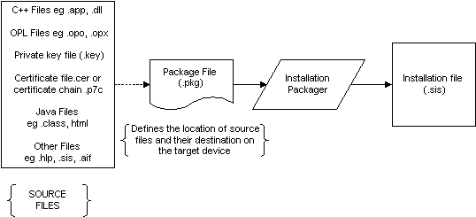

|
| |
Installation files are created using the Installation File Generator, based on a specification defined in a package control file. This documentation provides an overview of the information specified in the package file, and of the installation file creation process.
|
Package control files (extension .pkg) define the files to be packaged in a sis installation file. The information defined in the package file includes:
the names and locations on the developer’s PC of all the files to be included in the installation file. In addition to files installed in every installation, these may include a number of language specific resource files — only one of which is installed on the target device.
the location on the target EPOC device to which the files are to be installed.
details of the dependencies upon other components required by the application, e.g. common libraries supplied as separate sis files — optional. This information is used to ensure that libraries are deleted only if they are not needed by other applications.
a licence agreements which can be displayed during installation — optional.
the location of private key files and certificate files used to create an authenticated installation file — optional. These files are constructed using the Certification Generator.
A link to the canonical definition of the package file format is given below.
|
The diagram below provides a brief overview of how the Installation File Generator is used, and shows some of the file types which might be bundled in an EPOC sis installation file. The types of files included are dependent on the programming language, and on the nature of the application. Installation files may also include other installation files.

The Installation File Generator package file (pkg) defines the location of source component files on the PC, the target EPOC path and filename, and other installation information. The process of preparing components for installation is therefore:
Develop an application using any of the EPOC SDKs.
Debug/test application on EPOC emulator.
Ensure that all components of the application are in native EPOC format, see sections on font, image and sound file utilities.
Create a package file.
Run the Installation File Generator on the package file.
Copyright ©2002 Symbian Ltd. 6.1-00174 |
|